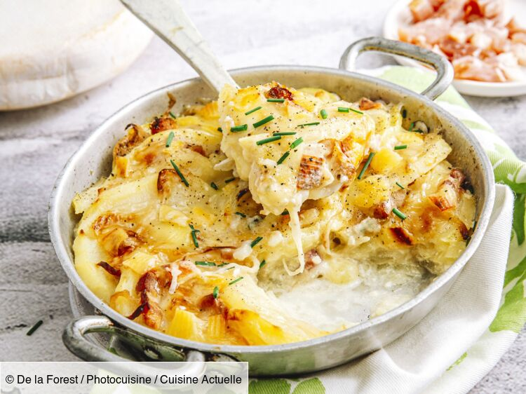

Tartiflette

Description
This striking looking dish is basically a potato, onion, and bacon casserole, topped with Reblochon cheese.
Ingredients
- 1 tablespoon butter
- 3 pounds whole russet potatoes
- 12 ounces thick cut bacon, cut into 1/2-inch pieces
- 2 large onions, thinly sliced
- 1 teaspoon salt, or to taste
- 1/2 teaspoon freshly ground black pepper, or to taste
- 1 pinch cayenne pepper, or to taste
- 1/2 cup dry white wine
- 3/4 cup creme fraiche
- 1 (16 ounces) round Reblochon cheese or other ripe, washed rind cheese
Steps
- Boil unpeeled potatoes with salt in water over high heat; reduce heat and simmer until potatoes are easily pierced with a knife
but are not too soft, 15 to 25 minutes depending on size. Remove potatoes from water to cool.
- Preheat oven to 375 degrees F (190 degrees C).
- Cook bacon in a skillet over medium to medium-high heat until cooked but not quite crisp and most of the fat is rendered out,
5 to 7 minutes. Push bacon to one side of the pan and blot up some of the fat with a wadded paper towel.
Add onion slices. Season with kosher salt and freshly ground black pepper and cayenne. Cook and stir over medium heat
until onions are soft, sweet, and golden, about 6 minutes. Add white wine; cook for 2 minutes and deglaze pan. Remove from heat.
- Cut wheel of cheese into 2 semi-circles. Place each half cut side down and split in half to form 2 more semi-circles, each with
a rind side and creamy cheese side.
- When potatoes are cool enough to handle, peel off the skin. Slice into fairly thick slices, about 1/3 inch thick.
- Place a little over half the potato slices onto bottom
of a 2-quart shallow baking dish. A little overlapping is fine. Sprinkle
with a bit of salt. Pour in bacon/onion/wine
mixture and spread over potatoes in an even layer. Arrange the remaining potato slices over the top, overlapping as needed. Spread
creme fraiche over the potatoes. Place down cheese pieces, rind side up. Transfer pan to a baking sheet.
Bake in center rack of preheated oven until browned and potatoes are tender, 45 to 50 minutes.
Back to Home